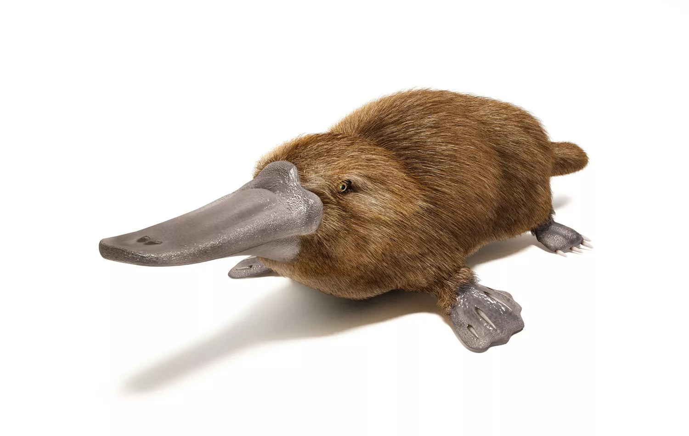

The platypus has a keratin bill, a broad flattened tail, and webbed feet. Its dense, waterproof fur is dark brown, becoming paler around its eyes and on its belly. The male has one venomous spur on each hind limb. Males are larger than females, but size and weight varies considerably from one individual to another. The average male is 20 inches in length, while females are around 17 inches long. Adults weigh anywhere from 1.5 to 5.3 pounds.
